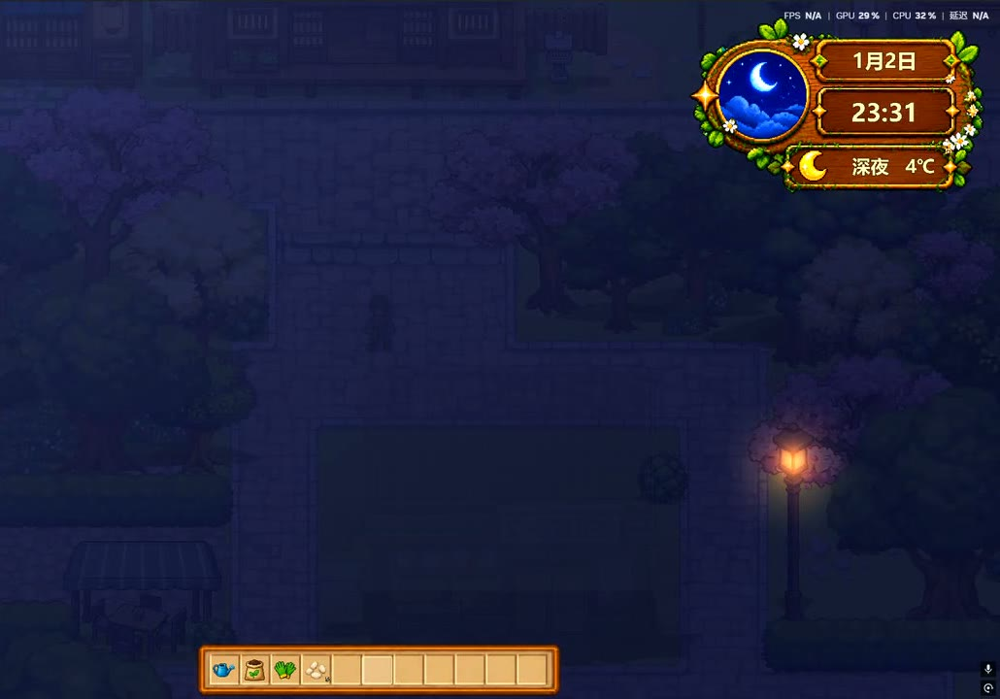

天气演示
时间推进时，天空、色温、灯光的亮度一起变化；右上角的天气窗同步显示当前时段与温度。
同一个镇子，按游戏内时钟换光照、环境声和 BGM；天气自己会变，晴、多云、雨各有各的色温。
同一地点，09:18 到 23:30 的光照、温度与天气窗变化。
时间推进时，天空、色温、灯光的亮度一起变化；右上角的天气窗同步显示当前时段与温度。

每 60–180 秒随机切换一次；入夜后自动进入「夜晚 / 深夜」。
雨天叠加雨幕与云影，夜里加月光和路灯的辉光；晴天、多云、雨天的色温和环境声都不一样。
很多游戏的天气只是背景板：晴天和雨天换一张贴图，玩家不会多看一眼。另一种做法是把它做成数值压力——下雨减产、夜里必须回家，用惩罚逼玩家在意。这两种我们都不想要。天气的目标只有一个：让同一个地方，隔一段时间再来，气质不一样。
所以先把时间做细。清晨、上午、下午、夕阳、夜晚五套天空，太阳角度、月光强度、路灯和窗户的亮灯各自独立。城镇 BGM 只分清晨、下午、晚上三段，边界在 5:00、12:00、18:00；切换用 2 秒淡入、1.2 秒淡出、中间留 0.4 秒空隙——宁可慢一点，也不要突然换歌。
温度做了两层：基准温度按天气取值，再叠一条 ±4℃ 的昼夜曲线，15:00 最热、凌晨最冷。这样 23:30 的晴天不会是 28℃，玩家不用看说明也知道是深夜。天气本身每 60–180 秒随机换一次，晴、多云、小雨、大雨、暴雨各有自己的温度区间与色温；入夜后自动切到“夜晚 / 深夜”，不会出现“深夜还挂着大太阳”的割裂。
取舍也很明确：天气不参与玩法。下雨不会让作物长得更快，也不会让鱼更好钓。一旦把天气和收益绑定，玩家就得看天气安排作息，休闲玩法会变成打卡。砍掉这条线之后，玩家不需要为天气做任何准备，但会记得“那个镇子晚上很安静”。对这样一个展示型 Demo，这比多一条数值更有价值。